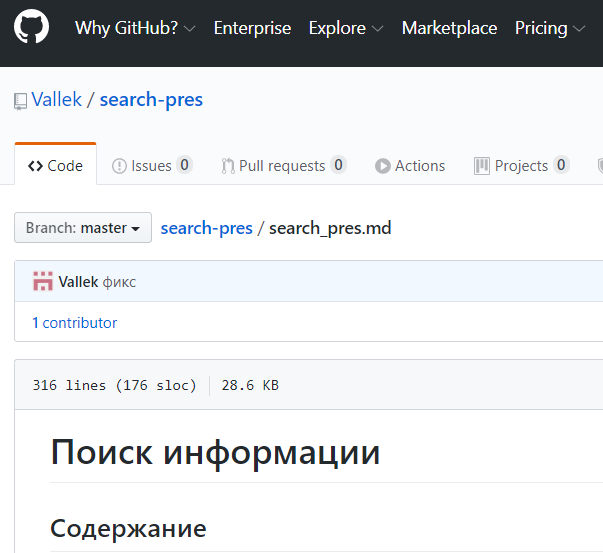

Лекция "Почему важно уметь искать информацию"
В своей педагогической практике я часто встречаю студентов, которые недооценивают важность самостоятельного поиска информации.
Эта лекция призвана объяснить новичкам, почему важно уметь искать информацию, где стоит и не стоит ее искать и как делать это эффективно. Это знания и подходу, которые я сам использую каждый день и без которых не смог добиться профессионального прогресса.
Она создавалась прежде всего для фронтендеров, но с небольшими изменениями принимима к других профессиям разработчиков. Я успешно читаю ее для мобильных разработчиков, тестировщиков, бэкендеров.
Вы можете ознакомится с конспектом лекции и презентацией по ссылкам:
Конспект лекции
Презентация